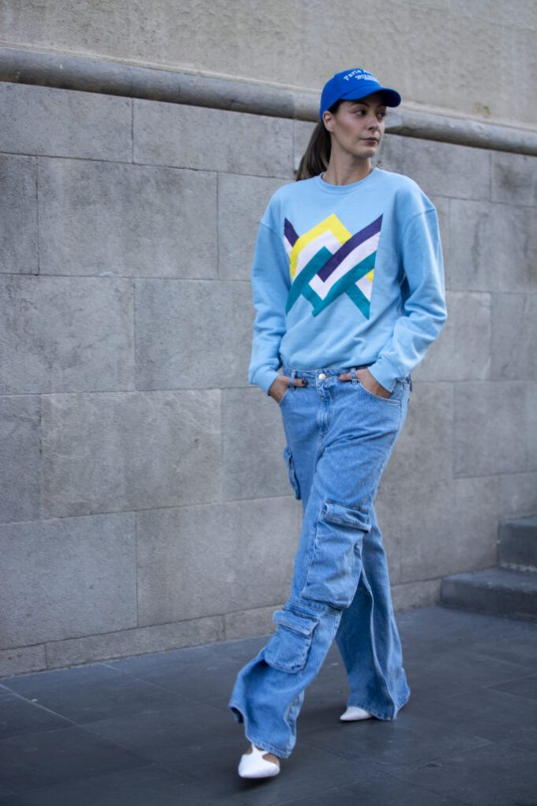
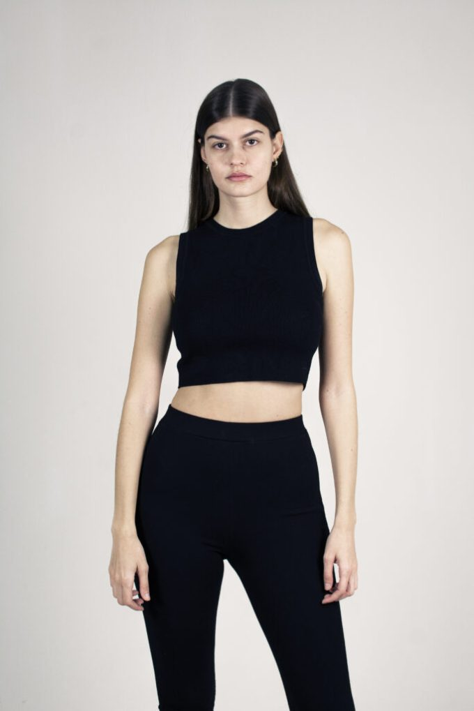
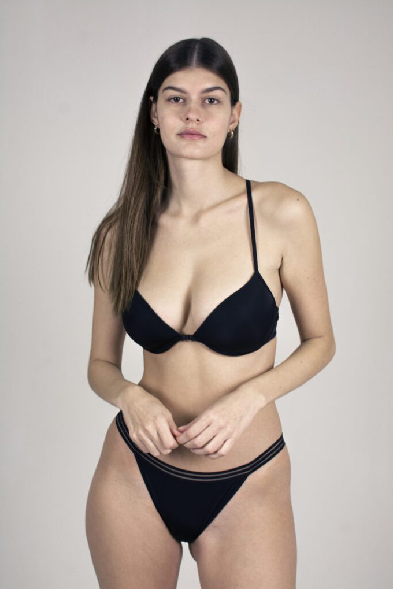
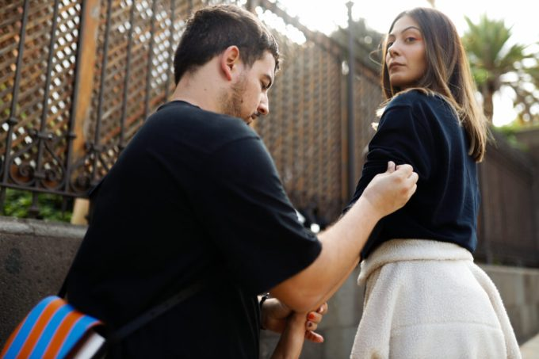
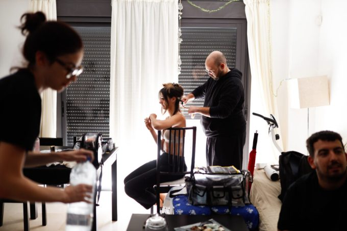
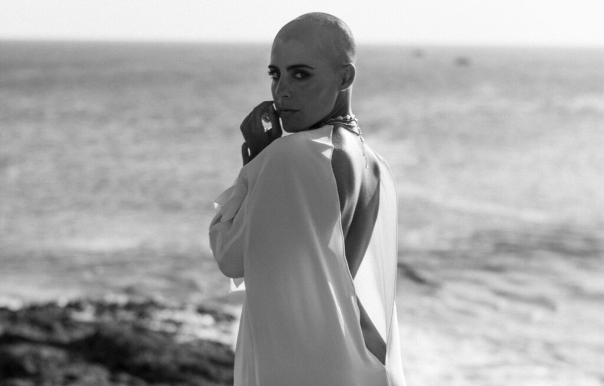
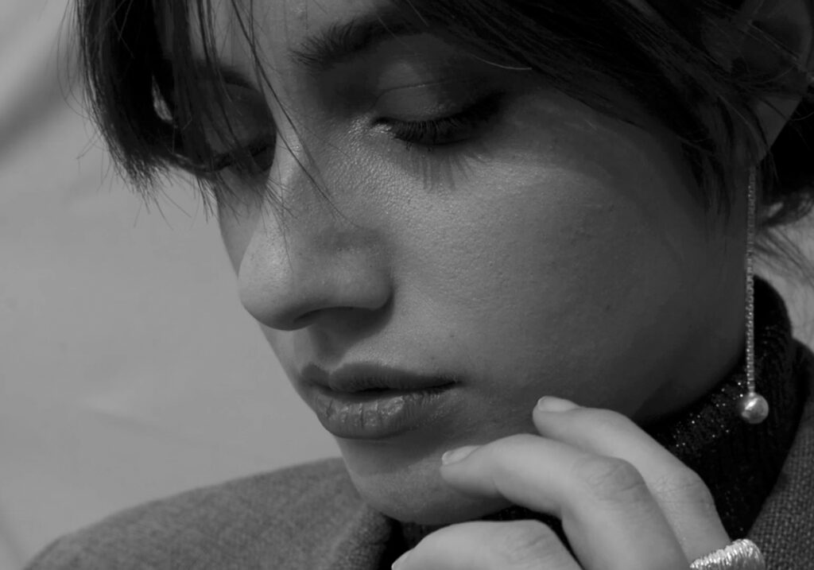

Fotografía de Moda
Editorial
Este servicio incluye fotografías de las cuales cuentan una historia. El por qué del concepto de la colección, ambientación, marcas asociadas para completar los looks, diferentes localizaciones, atrezzo, fotografías complementarias (blanco y negro, detalles, primeros planos de los modelos…)
- Fotos con las prendas más llamativas de la colección. El máximo de fotos elegidas serán por parte del diseñador.
- Están incluidos obligatoriamente los servicios de estilismo, maquillaje y peluquería.


Lookbook
¿Qué es un lookbook? Pues no es otra cosa que una colección de fotos recopiladas para mostrar un modelo, un estilo o una colección de ropa. Este término también se usa para describir el conjunto de trabajos de un artista, aunque no tenga nada que ver con la moda.
Todo lookbook debe contener imágenes de los productos importantes, con datos de contacto, dirección a la página web y números de referencia. También se puede utilizar el lookbook como un catálogo de ventas e incluir un precio recomendado de venta al detalle.


Test Modelo
Mantener tu book actualizado es clave para destacar en castings y conseguir oportunidades. Este servicio incluye fotografías profesionales para reflejar tu imagen actual.
Dos sesiones esenciales:
- Estilismo básico: Ropa neutra (blanco y negro); en mujeres, con tacones.
- Ropa interior sencilla: Sin encajes ni detalles llamativos.
Sin maquillaje y con el cabello natural, asegurando una presentación fiel a tu imagen real. Prepárate para brillar en la industria.


Making Of
Compartir el Making Of de tu colección refuerza tu profesionalidad y muestra tu implicación en cada detalle. Documentar el proceso creativo genera confianza y conecta con tu audiencia.
Este servicio incluye:
- ✔ Fotografía Making Of: Captura del proceso de preparación y sesión editorial.
- ✔ Vídeo Making Of: Clips exclusivos del desarrollo de la producción.
Haz que tu audiencia se enamore del proceso, no solo del resultado.




Fashion Film
Un Fashion Film es la evolución del editorial de moda: una pieza cinematográfica breve (1-15 min) que impacta por su estética y narrativa visual. A diferencia de un spot publicitario, su objetivo no es vender directamente, sino transmitir la esencia de la marca a través de imágenes cautivadoras, música envolvente y una historia sugestiva.
Este formato potencia la identidad de la firma, creando una experiencia sensorial que refuerza su posicionamiento en el mercado. Ideal para campañas digitales y redes sociales, el Fashion Film es la combinación perfecta de arte y estrategia.

Spot
¿Quieres que tu marca gane visibilidad y atraiga clientes? Un spot publicitario es la herramienta perfecta para captar la atención y dejar una impresión duradera.
Este formato combina elementos visuales y auditivos únicos que refuerzan la identidad de tu marca, transmitiendo mensajes claros, impactantes y fáciles de recordar. Ya sea para promocionar un producto, aumentar el reconocimiento de marca o ganar seguidores, un spot bien diseñado genera conexión y convierte espectadores en clientes.
Haz que tu marca destaque con un contenido atractivo y memorable.
